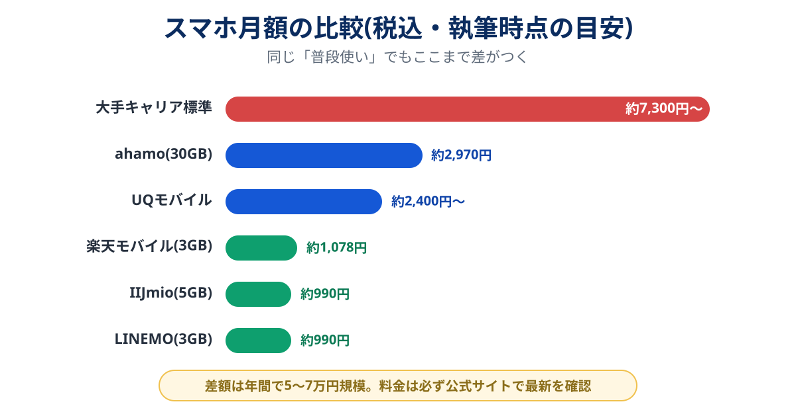

大手キャリアの標準プランを何となく使い続けている場合、スマホ代は月7,000円を超えがちです。一方、同じような使い方を格安SIM・オンライン専用プランに移すと、月1,000〜3,000円に収まる人が大半。
「面倒そう」で先送りしてきた人ほど、差額は積み上がっています。この記事では、乗り換え先の本命5社と、いま格段にラクになった乗り換え手順をまとめます。
品質最優先 → ahamo/使用量に波がある・無制限が欲しい → 楽天モバイル/小容量で最安 → LINEMO・IIJmio/店舗サポートが必要 → UQモバイル。
まずスマホの設定画面で自分の月間データ使用量を確認してください。話はそこからです。
どれくらい安くなる?料金差の実態

「大手のままでいる理由」が品質でもサポートでもなく“なんとなく”なら、それは年5万円超の会費です。しかも後述の通り、いまはahamoやLINEMOのようにキャリア品質のまま安くなる選択肢があるので、品質を理由に残る必要すら薄くなっています。
選び方:データ量から逆算する
- 〜3GB(自宅Wi-Fi中心):LINEMO・IIJmio・楽天モバイルの1,000円前後ゾーン
- 10〜30GB(外でも動画を見る):ahamo・UQモバイルの2,000〜3,000円ゾーン
- 無制限が欲しい:楽天モバイル(約3,300円)がほぼ一択
在宅中心ならスマホの通信はほぼ自宅Wi-Fiが担うため、小容量プランで十分。光回線とあわせて見直すと、通信費全体が最適化されます。
主要5社の比較表
| サービス | 料金目安(税込) | 回線 | 強み | こんな人に |
|---|---|---|---|---|
| 楽天モバイル | 3GBまで約1,078円 無制限 約3,278円 |
楽天+auローミング | 段階制&上限あり無制限 | 使用量に波がある人 |
| ahamo | 30GB 約2,970円 | ドコモ | キャリア品質そのまま・海外ローミング込み | 品質最優先の人 |
| LINEMO | 3GB 約990円〜 | ソフトバンク | LINEギガフリー | 連絡がほぼLINEの人 |
| UQモバイル | 約2,400〜3,300円 | au | 店舗サポートあり | 対面で相談したい人 |
| IIJmio | 5GB 約990円 | ドコモ/au(MVNO) | 最安級+端末セール | とにかく安くしたい人 |
5社の詳細レビュー
楽天モバイル(Rakuten最強プラン)
楽天モバイル
使った分だけ段階的に上がり、上限は無制限で約3,278円という唯一無二の設計。少ない月は約1,078円で済むため「月によって使用量がバラつく人」にぴったりです。専用アプリからの国内通話が無料なのも地味に強い。かつて弱点だった電波はプラチナバンド獲得以降、都市部を中心に改善が進んでいます。楽天市場ユーザーならポイント倍率の恩恵も。
- 段階制で「使わない月は安い」
- 無制限の上限が約3,278円
- アプリ利用で国内通話無料
- 建物内・地方の電波は事前確認を
- ポイント施策は条件が変わりやすい
ahamo
NTTドコモ

ドコモ回線をそのまま使うオンライン専用プラン。「安くしたいが、電波の不安は1ミリも増やしたくない」人の答えです。30GB+5分かけ放題込みで約2,970円、海外ローミングも追加料金なし。手続きがオンライン限定な点だけ割り切れれば、不満がまず出ない優等生です。
※ ahamo光は自宅用の光回線サービスです。提供エリア・工事の要否・キャンペーンの適用条件は公式ページでご確認ください。
LINEMO
ソフトバンク
ソフトバンク品質で小容量なら月約990円から。LINEのトーク・通話がデータ消費ゼロになる「LINEギガフリー」が最大の特徴で、連絡がほぼLINEという人は実質のデータ消費が大きく減ります。小容量プランの本命候補。
UQモバイル
KDDI

au品質の回線で、全国の店舗で対面サポートが受けられるのが最大の強み。「オンライン手続きだけは不安」という人や、親のスマホをまとめて乗り換えるケースで頼れます。自宅がauひかり等なら自宅セット割でさらに安くなります。
IIJmio
インターネットイニシアティブ(IIJ)
老舗MVNOの雄。5GBで約990円という最安級の料金に加え、乗り換えセットのスマホ端末セールが名物です。MVNOの性質上、お昼休みは速度が落ちやすい点だけ把握を。自宅Wi-Fi中心の生活なら実用上の影響はほぼありません。
MNP乗り換えの手順(所要1〜2時間)
-
今のスマホが使えるか確認
乗り換え先公式の「動作確認端末一覧」で機種を検索。2021年以降の端末ならほぼ問題ありません。
-
本人確認書類とクレジットカードを用意
運転免許証やマイナンバーカード。eSIMならこのあと最短当日に開通します。
-
乗り換え先で「MNP転入」を選んで申し込み
MNPワンストップ対応社同士なら予約番号の発行も不要。電話番号はそのまま引き継がれます。
-
回線切り替え+初期設定
SIM到着(またはeSIM発行)後、ガイド通りに切り替えとAPN設定。10分程度です。旧回線の解約は自動で行われます。
乗り換え前の注意点
- キャリアメールを使っている場合は持ち運びサービス(月330円程度)かGmail等への移行を先に
- キャリア決済のサブスクは支払い方法を変更しておく
- 家族割・光回線セット割への影響は家族全体の総額で判断
- 解約月は日割りにならないことが多いので月末近くの乗り換えが効率的
よくある質問
格安SIMにすると速度は遅くなりますか?
今のスマホのまま乗り換えられますか?
手数料はいくらかかりますか?
まとめ:まず使用量の確認、それだけで話が進む
- スマホの設定画面で月間データ使用量を確認するのが第一歩
- 品質→ahamo、波がある→楽天、最安→LINEMO/IIJmio、店舗→UQ
- 乗り換えはワンストップ化で1〜2時間・ほぼ無料
- 浮いた分は自宅回線の見直しとあわせて年間数万円の節約に
- 各社公式サイトの料金プラン(2026年8月確認)
- 総務省「モバイル市場の競争環境に関する検討会」公開資料
- 運営者自身の格安SIM乗り換え経験